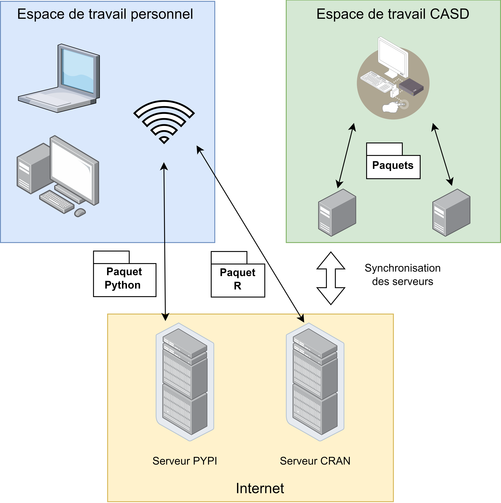
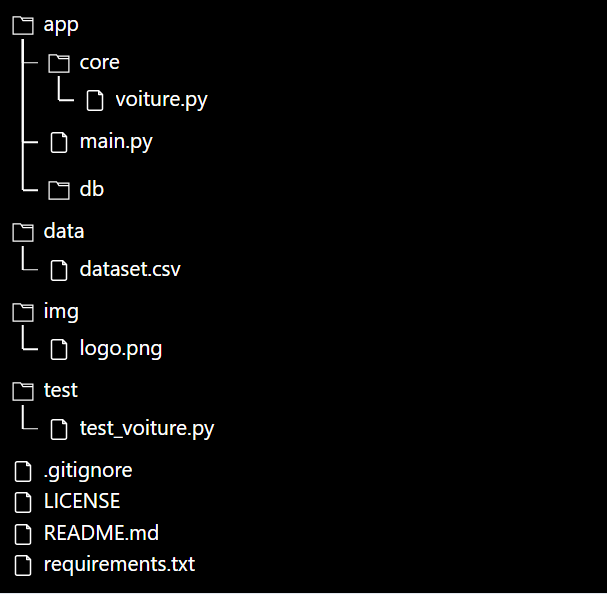
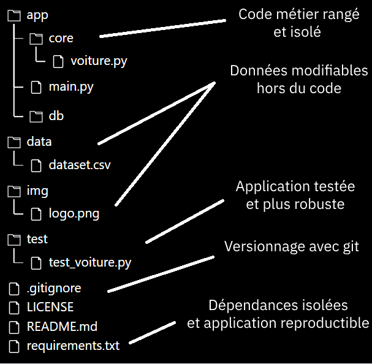

Python au CASD
Cellule Datascience
Objectifs
- Utiliser et gérer Python au CASD (environnement / dépendances)
- GIT
- Gestion de projet Python
- Outils pour développer son application
Environnements virtuels
Un environnement virtuel Python c'est :
- Une version de Python
- Un ensemble de librairies associées
encapsulés dans un ensemble que l'on peut utiliser

Cela permet d'assurer :
- Une isolation des dépendances entre les différentes applications
- La gestion de différentes versions de Python
- La gestion de différentes versions des librairies
Deux technologies pour gérer ces environnements :
- Anaconda : Windows / Linux / MacOS
- Pyenv : Linux / MacOS
conda create --name projet_1 python=3.12 --offline Activation de l'environnement :
conda activate projet_1 Installer des paquets dans l'environnement
pip install package_name pip install -r requirements.txt import package_nameSpécificité Python :
Certains packages sont natifs !
pip install sysne fonctionnera pas car sys est distribué avec Python
Fonctionnement au CASD :
Spécificité CASD :
L'ensemble des packages n'est pas disponible sur les serveurs internes !
En cas de paquet manquant : service@casd.eu
En cas de doute :
pip listconda listGestion du projet Python
Gestion du code et de l'arbre de fichier
Mon objectif est de vous convaincre que ceci :
est plus efficace que ceci :

Pourquoi ?
Règles générales :
- S'appuyer sur des templates existants
- Séparer les objectifs et les traiter de façon distinctes
- Correctement cerner les besoins
- Effectuer une conception générale en modules et sous modules qui communiquent
Git au CASD

Intérêt de Git
- Avoir différentes versions de son code en suivant les changements
- Rétablir une version antérieure en cas de bug
- Travailler de façon collaborative
- Ne pas perdre son code en cas de panne sur une machine
Principe de fonctionnement

Principe de fonctionnement
- Chaque utilisateur envoie des petites modifications à la base de code
- Il décrit sa modification dans un message
- Il envoie les modifications de façon progressive au dépot central
- Les autres contributeurs peuvent récupérer les modifications
Au CASD
- Pas de synchronisation avec un répertoire exterieur
- Les accès aux providers (Github / Gitlab) sont coupés
Au CASD
- Git est disponible et peut être utilisé localement !
- Le dépot distant est remplacé par un dépot local dans l'espace commun !
Principe du git bare

- Le repertoire bare est dans l'espace commun, il n'est pas directement éditable
- Les repertoires non bare sont dans les espaces personnels, ils sont éditables
Développer une application
Visual Studio Code
- Très nombreuses fonctions de personnalisation
- Multi-language
- Autocomplétion/sauvegarde automatique/formattage automatique
Coder en Python
app/core/functions.py :def convert(age):
if age < 18 :
categorie = '[0-18]'
elif age < 30 :
categorie = '[18-35]'
elif age < 50 :
categorie = '[36-50]'
else :
categorie = '[51-110]'
return categorie
Coder en Python
app/main.py :# Imports
import os
import sys
from app.functions import convert
# Fonction principale
def main():
print("Bienvenue !")
age_utilisateur = input("Entrez votre age : ")
categorie = convert(age_utilisateur)
print(f"Vous appartenenez aux {categorie} ans !")
# Execution du code
if __name__ == "__main__":
main()